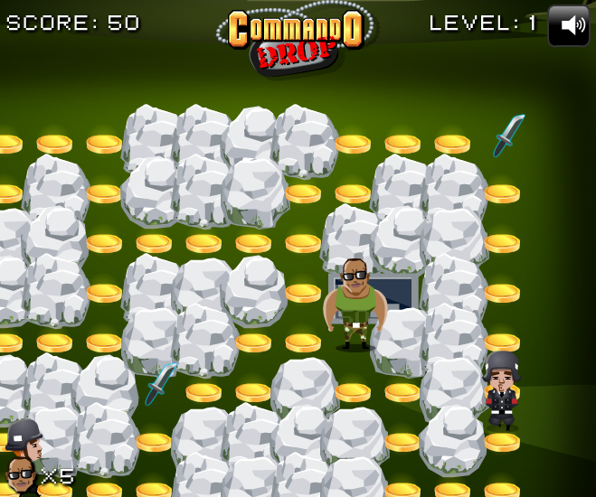
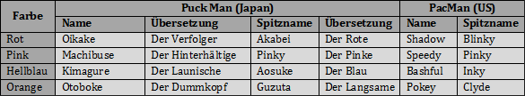
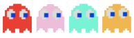
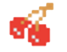
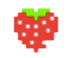
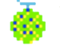
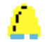

Erfunden wurde PacMan schon im März 1979 von Iwatani Toru, doch erst nach einer einjährigen Entwicklungszeit wurde das Spiel am 12. Mai 1980 als Puck Man von dem Spielehersteller Namco als das erste Video-Arcade- Spiel in echter Farbe veröffentlicht. 1981 fand das Spiel seinen Weg nach Amerika und seitdem begann auch der Siegeszug von PacMan auf der ganzen Welt. Nach dem Erfolg von PacMan kamen sehr viele Nachfolger wie Ms PacMan, Super-PacMan oder Jr. PacMan.
Da bis heute immer wieder Klone, Varianten und Weiterentwicklungen des Spiels auf dem Markt erschienen, die ebenfalls gut bei den Spielern ankommen, dachten wir uns, dass wir auch einen Versuch starten sollten. Das von uns entwickelte Spiel Commando Drop ist auch eine Variante von PacMan. Der wesentliche Unterschied liegt darin, dass sowohl die Hauptfigur als auch seine Feinde nun menschliche Gestalten annehmen und das Spiel zumindest eine, wenn auch sehr einfache Handlung hat.
Das von Wingshands ACG erschaffene Commando Drop befördert dich direkt hinter die feindliche Linie. Ein Pilot schlägt seinem Kommandeur vor, in das Besatzungsgebiet der Feinde einzudringen, da es dort sehr viel Gold gibt. Es heißt, dass dieser Gegend mangelhaft bewacht sei und man dadurch leichten Zugang hätte. Der Kommandeur findet diese Idee ganz gut und willigt ein.
Der Pilot verlangt aber die Hälfte des Goldes, wenn er den Piloten in das feindliche Hinterland bringen soll. Der Kommandeur will aber 70 Prozent des Goldes haben, wenn er sich in so einer Gefahr begeben soll, ohne zu wissen, ob er jemals lebend da rauskommt. Obwohl der Pilot dennoch versucht, 40 Prozent für sich zu verhandeln, bleibt der Kommandeur hart und würde nur bei einer Aufteilung von 70/30 einschlagen. Schließlich muss der Pilot nachgeben und sie einigen sich auf 70/30.
Mit dem Hubschrauber bringt der Pilot den Kommandeur zum feindlichen Lager, von wo aus der Soldat nun auf sich allein gestellt ist. Seine Aufgabe ist es, alle Goldmünzen in den Gängen des Labyrinths zu sammeln, ohne selbst von den feindlichen Soldaten erschossen zu werden. Begleite ihn auf seiner Suche nach Gold und setze alles auf eine Karte. Mit seinem intensiven Spielspaß und fesselnde Abenteuerfeeling präsentiert Commando Drop mit dem typischen Einspielermodus das berühmte Spiel PacMan aus einem anderen Blickwinkel.

Das Spielprinzip von PacMan haben wir in Commando Drop gleich belassen, da gerade die einfache und leicht zugängliche Spielweise PacMan zu seinem großen Erfolg verholfen hat. Wir haben nur die Spielfiguren und die Items verändert. Weiterhin wollten wir eine kleine Hintergrundgeschichte einbauen, um dem Spiel einen Inhalt zu geben.
In unserer Version musst du dem vom Durst nach Gold unwiderstehlich getriebenen Protagonisten in der Figur eines Kommandeurs verhelfen, alle Goldmünzen in den Gängen des Labyrinths zu sammeln. Dabei muss er aufpassen, nicht unbewaffnet auf feindliche Soldaten zu treffen, denn diese besitzen alle lange Maschinenpistolen, mit denen sie aus großer Entfernung schießen können, während der Protagonist selbst zu Beginn keine Verteidigungsmittel hat.
Ähnlich wie beim traditionellen PacMan erscheinen je Level immer wieder Items, mit denen man durch die Auslöschung der Feinde höhere Punktzahlen erzielen kann. Bei seinem Raubzug wird er auf drei verschiedene Waffen stoßen:
Sobald der Soldat eine Waffe in der Hand hat, werden sich seine Feinde blau färben. In diesem Zustand ist der Soldat selbst unverwundbar und kann die Feinde risikolos angreifen. Die Feinde sind bei Commando Drop intelligenter als bei PacMan, denn sie werden versuchen dem Kommanderu auszuweichen und wegrennen.
Die Steuerung des Kommandeurs durch das Labyrinth erfolgt wie bei PacMan auf ganz altmodischer Weiße über die Pfeiltaste der Tastatur. Solltest du an einer Waffe vorbeilaufen, wird die Waffe automatisch vom Kommandeur aufgehoben. Wenn er auf einen Feind trifft, wird die Waffe automatisch eingesetzt, ohne dass man selbst was machen muss.
Wer sich für die Entstehungsgeschichte von PacMan interessiert und wer PacMan noch nie gespielt hat, findet im Folgenden Informationen dazu. Es gibt mittlerweile zu viele PacMan Versionen, als dass wir über alle schreiben können. Wir beschränken uns bei unserer bereitgestellten Informationen weitgehend auf die Originalversion des Arkaden-Spiels.
PacMan ist die Hauptfigur des Spiels in der Gestalt eines runden, gelben Kreises mitten auf dem Spielfeld. Ziel des Spiels ist es, ihn alle 244 weiße Punkte in den Gängen des Labyrinths fressen zu lassen, ohne von den vier Geistern selbst erwischt zu werden. Es gibt insgesamt 256 Levels. Navigiert wird mit der Pfeiltaste der Tastatur.
Es gibt insgesamt 2 Tunnelausgänge, die wie schwarze Quadrate aussehen. Wenn PacMan an einem Tunnelende reingeht, kommt er am anderen Tunnelende wieder raus. Auf dieser Weise kann er in brenzliche Situationen den Geistern entkommen.
Je Level besitzt PacMan drei Leben. Jedes Mal, wenn er von einem Geist gefressen wird, verliert er ein Leben. Wenn PacMan eine Kraftpille oder ein Item frisst, verwandeln sich die Geister für einige Sekunden in blaue Gespenster und PacMan kann sie in diesem Zustand fressen, um zusätzliche Punkte zu erhalten. Die Gespenster sterben dadurch aber nicht, sondern werden nur kurzfristig unsichtbar. Wenn die Items nicht gefressen werden, verschwinden sie nach einiger Zeit wieder.
Ein Level ist beendet, wenn alle Punkte aufgefressen wurden. Die höheren Levels unterscheiden sich im Wesentlichen von dem vorherigen nur in der Spielgeschwindigkeit und dem veränderten Gegnerverhalten.
Die Namen und Spitznamen der Gespenster
Da man mit PacMan ein Gegenpol zu den bis dahin erschienen Ballerspiele schaffen wollte, um auch die weiblichen Zielgruppe anzusprechen, wurden die Gegner von PacMan als kleine niedliche Gespenster in bunten Farben mit großen Augen gestaltet. Die vier Gespenster verhindern PacMan dabei, alle 244 Punkte zu schlucken. Jedes Gespenst hat einen Namen und Spitznamen, die in der englischen Version geändert wurden. Wie sie lauten werden in der Tabelle unten gezeigt:

Und so sehen die Gespenster aus:

Die Abbildung zeigen Blinky, Pinky, Inky und Clyde
Die Gespenster sollen alle eine eigene Eigenschaft haben, um das Spiel lebendiger zu gestalten. Daraus entstanden die witzigen Namen der Gegnerfiguren von PacMan. Aber wie erhielt der Protagonist seinen heutigen Namen?
Der ursprüngliche Name des Spiels war „Puck Man“. Dieser Name leitet sich aus verschiedenen Richtungen ab. Zum einen ist es der japanischen Slangwort „paku paku“ für „wiederholt den Mund beim Essen auf und zu machen“ entlehnt, zum anderen hat die Hauptfigur eine Puck-förmige Gestalt, die man aus Eishokey kennt.
Als das Spiel 1981 in Amerika lizenziert wurde, hat man den Namen in PacMan umgewandelt, da befürchtet wurde, dass „Puck Man“ in „Fuck Man“ umgewandelt werden könnte. Bis auf den Titelname des Spiels und den Namen der vier Monster ändert sich nichts am Spielprinzip.
Wie bereits oben erwähnt gibt es 244 Punkte. Für jeden gefressenen Punkt erhält man 10 Punkte. Wenn PacMan von einem Gespenst gefressen wird, verliert er ein Leben. Insgesamt stehen ihm 3 Leben pro Level zur Verfügung. Er kann ein zusätzliches Leben erhalten, wenn er 10.000 Punkte erreicht hat. Je mehr Gespenster PacMan pro Level gefressen hat, desto höher ist der Wert eines weiteren Gespenst: (1)Gespenst: 200 Punkte, (2)Gespenst: 400 Punkte, (3)Gespenst: 800 Punkte,(4)Gespenst: 1600 Punkte
| Symobl | Name/Bezeichnung | Punkteverteilung | Erscheinung |
|---|---|---|---|
| Punkt | 10 Punkte | ab Level 1 | |
| Kraftpille | 50 Punkte | ab Level 1 | |
|  | Kirsche | 100 Punkte | Level 1 |
|  | Erdbeere | 100 Punkte | Level 2 |
| Orange | 500 Punkte | Level 3 und 4 | |
| Apfel | 700 Punkte | Level 5 und 6 | |
|  | Ananas | 1.000 Punkte | Level 7 und 8 |
| Raumschiff | 2.000 Punkte | Level 9 und 10 | |
|  | Glocke | 3.000 Punkte | Level 11 und 12 |
| Schlüssel | 5.000 Punkte | ab Level 13 |
Die höchste Punktzahl erhält PacMan, wenn er es schafft, in jeden Level alle Punkte, alle Kraftpillen und alle Items sowie alle Gespenster aufzufressen ohne ein einziges Leben zu verlieren.
| Commando Drop | PacMan |
|---|---|
| Für jeden gesammelten Goldtaler erhält man 50 Punkte. | Für jeden gefressenen weißen Punkt erhält PacMan 10 Punkte. |
| Das Prinzip der Punktevergabe läuft bei allen Waffen gleich. Für jeden Treffer mit einer Waffenart erhält der Soldat die einfache Punktzahl. Für jeden weiteren Treffer mit derselben Waffe erhält er das Vielfache an Punktzahlen. | Jedes Item hat einen bestimmten Wert für die man speziell Punkte erhält. Für jedes gefressene Gespenst erhält man weitere Punkte. |
| Es gibt insgesamt 3 Items. | Es gibt insgesamt 8 Items. |
| Alle feindlichen Soldaten sehen gleich aus. Sie haben keine eigenen Charakter und keine eigenen Namen. | Die Gespenster sind individuell und durch ihre Farben voneinander unterscheidbar. Jedes Gespenst hat einen Namen und ein eigenes Verhalten. |
| Wenn ein Feind getötet wurde, kann er nicht mehr zum Leben erwachen. Es kommen aus der Treppe, die zu einem Unterbau führt, immer wieder neue Soldaten ins Spiel. | Es gibt insgesamt nur 4 Gespenster. Wenn ein Gespenst gefressen wird, wird er für einen kurzen Moment unsichtbar und kann in der Zeit auch nicht wieder gefressen werden. An seinen zwei riesigen Augen, sieht man wohin es sich gerade bewegt. Danach erscheint er wieder in seinem vollständigen Gestalt und kann wieder töten. |
| Zu Spielbeginn hat der Kommandeur 5 Leben. | PacMan hat zu Spielbeginn nur 3 Leben. |
Firmendaten
Wingshands-ACG: 623 Brown Street, Walnut Creek, CA 94596
Vorstand:Yvonne Bürger
Kontakt
Bei Fragen und Problemen mit der Website oder dem Spiel schicken Sie bitte eine E-Mail an unser Kundenservice kundenservice@handwings-acg.com
Sie erreichen uns außerdem unter der Telefonnummer +1 925-933-4419 erreichbar (Montag-Freitag 10-17 Uhr) und per Post an: Wingshands-ACG 623 Brown Street Walnut Creek, CA 94596
Internet http://winghands-acg.com/
Haftungshinweis
Trotz sorgfältiger inhaltlicher Kontrolle können wir nicht immer alle Fehler und Verlinkungen überwachen. Wir übernehmen deshalb keine Haftung für die Inhalte externer Links. Für den Inhalt der verlinkten Seiten sind ausschließlich deren Betreiber verantwortlich. Die Nutzung von veröffentlichten Kontaktdaten im Rahmen der Impressumspflicht durch Dritte, um Werbungen und Informationsmaterialien zu übersenden, die nicht ausdücklich gefordert werden, wird hiermit ausdrücklich widersprochen. Die Betreiber der Website winghands-acg.com behalten sich das Recht vor, im Falle der unverlangten Zusendung von Werbeinformationen, etwa durch Spam-Mails, rechtliche Schritte einzuleiten.